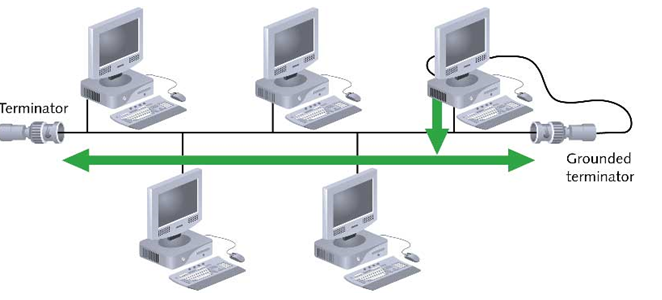
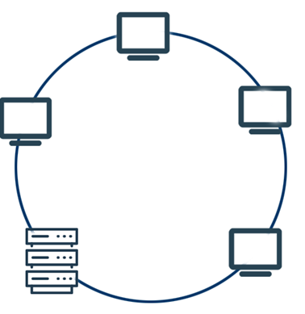
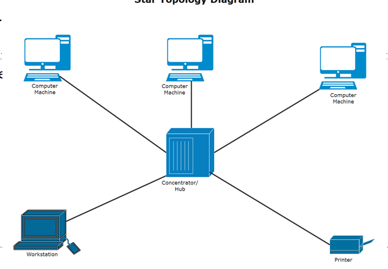
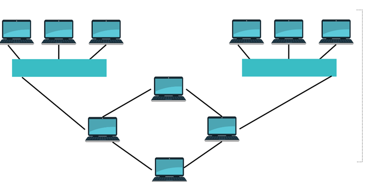

11.1.2.1 explain the difference between the terms security, privacy and data integrity
Security: Involves protecting data and systems from unauthorized access, theft, and malicious attacks. This includes implementing firewalls, anti-virus software, and regular security patches to prevent unauthorized access or attacks such as hacking and malware.
Privacy: Focuses on the right of individuals to control their personal information, determining how it is collected, used, shared, and stored. Laws such as GDPR and HIPAA exist to protect user privacy and ensure compliance by organizations.
Data Integrity: Refers to the accuracy and consistency of data throughout its lifecycle. Measures like checksums, hashing, and data validation ensure that data remains unaltered and reliable during storage, retrieval, or transmission.
11.1.2.2 Provide Necessity of Protecting Data and Computer Systems
Data protection is essential due to the rising frequency of cyber threats such as hacking, phishing, and data breaches. Protecting systems and data ensures:
Confidentiality: Prevents unauthorized access to sensitive information, ensuring privacy.
Data Availability: Ensures systems remain operational, avoiding costly downtime and service disruptions.
Data Integrity: Protects data accuracy and consistency.
Compliance: Meets regulatory and legal requirements to avoid legal penalties.
Effective protection mechanisms such as encryption, multi-factor authentication (MFA), and regular updates mitigate risks and reduce vulnerabilities.
11.1.2.3 Describe Data Protection Measures Such As Backup and Disk Mirroring
Data backup is the process of creating copies of data to restore original content in case of loss, corruption, or disaster. There are different backup strategies designed to meet specific data protection needs:
Full Backup
A full backup involves copying all data in a system, creating a complete snapshot of files and folders.
Advantages:
Easy and fast data restoration as all files are backed up together.
Comprehensive, providing the most complete data copy.
Disadvantages:
Time-consuming and requires significant storage space.
Not ideal for frequent backups due to size and duration.
Use Case: Best for periodic, complete data captures, such as at the end of a project cycle.
Incremental Backup
An incremental backup copies only data that has changed since the last backup, regardless of type (full or incremental).
Advantages:
Consumes less storage space than full backups.
Faster backup times, especially for frequent backups.
Disadvantages:
Slower restoration as multiple backups (including full and incremental) need to be combined.
Potential for higher complexity during recovery processes.
Use Case: Suitable for daily backups in environments where data changes frequently.
Differential Backup
Differential backups copy all data that has changed since the last full backup. Unlike incremental, it does not reset the change tracking.
Advantages:
Restoration is faster compared to incremental backups as only two sets of data (latest full backup and latest differential) are needed.
Less complex to manage compared to incremental.
Disadvantages:
Can become slower and require more space as time progresses from the last full backup.
Use Case: Ideal for environments needing quick recovery points without high data restoration complexity.
Disk Mirroring (RAID)
Disk mirroring ensures data redundancy and availability by copying identical data across multiple disks. Different RAID (Redundant Array of Independent Disks) levels offer specific benefits:
RAID 0 (Striping)
Data is split across multiple disks (striped), offering increased speed but no redundancy.
Advantages:
High read and write performance due to parallel disk operations.
Disadvantages:
No data redundancy; if one disk fails, data is lost.
Use Case: Useful for non-critical data where speed is a priority, such as temporary files or gaming applications.
RAID 1 (Mirroring)
Data is duplicated (mirrored) across two or more disks, providing redundancy.
Advantages:
Complete data redundancy; data remains available if one disk fails.
Disadvantages:
Storage capacity is halved (e.g., two disks mirror each other, resulting in a net capacity of one disk).
Use Case: Suitable for critical data that requires high availability and minimal downtime, such as financial records.
RAID 6 (Striping with Double Parity)
Data is striped across disks with double parity, offering fault tolerance.
Advantages:
Can tolerate the failure of up to two disks.
Data remains available and recoverable after two simultaneous disk failures.
Disadvantages:
Slower write speeds due to additional parity calculations.
Higher cost due to more disks required.
Use Case: Useful for mission-critical data storage with high availability and fault tolerance.
11.1.2.4 Data Protection Measures: Encryption and Authorization
Encryption
Encryption involves converting data into a coded format that can only be accessed or decrypted by authorized users with the decryption key. The process ensures data confidentiality, integrity, and security during storage or transmission.
Common Encryption Algorithms:
Symmetric Encryption (e.g., AES): Uses a single key for both encryption and decryption. Faster but requires secure key sharing.
Asymmetric Encryption (e.g., RSA): Uses a public key for encryption and a private key for decryption. Slower but more secure for data exchange.
How it Works:
Data is encrypted into ciphertext using a chosen algorithm. The encrypted data remains unreadable until decrypted using the appropriate key, protecting sensitive information from unauthorized access during transmission and storage.
Access Rights (Authorization)
Authorization ensures only authenticated users have the right to access specific resources, systems, or data based on predefined access controls and privileges.
Methods of Authorization:
Role-Based Access Control (RBAC): Assigns permissions based on the user's role within an organization.
Attribute-Based Access Control (ABAC): Allows access based on user attributes, resource attributes, and the context of the request.
Discretionary Access Control (DAC): Grants resource owners the right to determine access permissions.
How it Works:
Authorization systems check user credentials, role, and permissions when accessing resources. Users can access only the data or systems they are explicitly allowed to, reducing the risk of unauthorized access and data breaches.
11.1.2.5 explain the difference between the terms verification and validation
Verification
Verification ensures that data entry and processes align with expected specifications and correctness. It checks whether the product or data meets specified criteria and is often used during data entry, software testing, and document proofreading.
Double Data Entry: Involves entering data twice and comparing both entries to find discrepancies, reducing the risk of human error.
Proofreading: A manual review of documents or data entries for accuracy and correctness. This process involves checking for typographical errors, inconsistencies, or incorrect data.
Validation
Validation ensures that the data, software, or process meets the intended purpose and requirements. It checks the accuracy and integrity of data through various techniques and rules.
Type of Validation
Description
Range Check
Ensures data falls within a specified range (e.g., age between 18 and 65).
Type Check
Validates data type (e.g., ensuring a numeric field only contains numbers).
Length Check
Confirms that data input matches the required length (e.g., a password must be at least 8 characters long).
Presence Check
Ensures that a required field is not left blank.
Format Check
Checks that data follows a specific format (e.g., an email address containing "@" and ".").
Consistency Check
Verifies data consistency between related fields (e.g., if "Country" is specified, "State" should match accordingly).
11.1.2.6 explain the function and operation of Blockchain technologies
1. Hashing
Hashing transforms input data into a fixed-size string of characters, which represents the data uniquely. Each block in a blockchain has a unique hash, and even a small change in the data results in a different hash, ensuring data integrity.
2. Proof-of-Work (PoW)
Proof-of-Work is a consensus mechanism that requires network participants (miners) to solve complex mathematical problems to validate transactions and add new blocks to the blockchain. This process consumes significant computational power, making it difficult for attackers to manipulate data.
3. Decentralization
Blockchain operates on a decentralized, peer-to-peer (P2P) network where every participant (node) has access to the entire blockchain ledger. Decentralization enhances transparency, security, and resilience against attacks.
Underlying Principles of Blockchain
Genesis Block: The first block in a blockchain, serving as the foundation for all subsequent blocks.
Hash of Previous Block: Each block contains a reference to the hash of the previous block, creating a chain of interconnected blocks.
Consensus Mechanism of Blockchain
Blockchain uses consensus mechanisms to ensure agreement among participants in the network regarding the validity of transactions. Key steps include:
Transaction initiation and broadcast to the network.
Validation of transactions by nodes using specific criteria.
Competing nodes solve cryptographic puzzles (Proof-of-Work) or other mechanisms (e.g., Proof-of-Stake).
Consensus is reached, and a new block is created and added to the blockchain.
All nodes update their copies of the blockchain ledger to reflect the newly added block.
11.1.3.1 follow the copyright law when developing applications
Copyright law protects the original work of creators, including software developers, from unauthorized use, reproduction, and distribution. Developers must ensure their applications respect existing copyrights and avoid infringement by using licensed or properly attributed content.
Copyright
Copyright grants exclusive rights to the creator of original works (e.g., software code, designs, artwork) to reproduce, distribute, and modify their work. When developing applications:
Obtain proper licenses for third-party software components.
Use open-source code in compliance with its license terms.
Avoid copying and redistributing copyrighted code or content without permission.
Digital Rights Management (DRM)
DRM technologies control how digital content is used and distributed. It prevents unauthorized copying, sharing, and modification, protecting the intellectual property of developers and content creators. Examples of DRM in software include license keys, encryption, and hardware checks.
Design Rights
Design rights protect the unique visual appearance of a product, such as the user interface (UI) of software or the graphical layout. When developing applications, ensure that your designs do not infringe on existing design rights and consider registering your original designs for protection.
11.1.3.2 Specifics of Open Source Software
Open-source software (OSS) is software with source code that is freely available for anyone to view, modify, and distribute. It often has a community-driven development model, with contributions from many developers worldwide.
Advantages of Open Source Software
Cost-effective: Typically free to use and distribute.
Transparency: The source code is accessible, allowing for review and customization.
Community Support: Users can access extensive forums, documentation, and collaboration from a global community.
Customization: Users can modify the code to suit their specific needs and environments.
Disadvantages of Open Source Software
Lack of Dedicated Support: Support often relies on community forums, which may not be reliable or immediate.
Complexity: Customizing and maintaining the code may require specialized knowledge.
Compatibility Issues: Open-source software may not integrate seamlessly with proprietary systems.
Security Risks: Publicly available code may be vulnerable to exploitation by attackers.
11.1.3.3 Specifics of Closed Source Software
Closed-source software is proprietary software with source code that is not publicly available. Users purchase licenses to use the software but cannot modify or distribute it without the developer's permission.
Advantages of Closed Source Software
Dedicated Support: Users typically receive professional, dedicated support and maintenance from the software vendor.
Enhanced Security: Code is not publicly available, reducing the risk of exploits by malicious actors.
User-Friendly Interface: Closed-source software often focuses on polished, user-friendly interfaces for a broader market appeal.
Integration Capabilities: Designed to work seamlessly with other proprietary products from the same vendor.
Disadvantages of Closed Source Software
Higher Cost: Typically requires a license fee or subscription.
Limited Customization: Users cannot modify the software to meet their specific needs.
Vendor Lock-In: Users may be dependent on a single vendor for updates and support, which can limit flexibility.
Slower Updates: Feature and security updates depend on the vendor's release cycle.
11.1.3.4 Restrict Access to Data Made Available Through the Internet Using a Variety of Methods
Ensuring secure access to data available over the Internet is critical to safeguarding sensitive information. Organizations can use various methods to restrict and protect data access:
Methods to Restrict Data Access
Authentication Mechanisms: Requiring users to verify their identity through usernames, passwords, two-factor authentication (2FA), biometric data (fingerprint or face recognition), etc.
Authorization Controls: Defining user access levels to specific data or applications using role-based access control (RBAC) or attribute-based access control (ABAC).
Firewalls: Filtering and monitoring incoming and outgoing network traffic based on predefined security rules, protecting data from unauthorized external access.
Virtual Private Networks (VPNs): Establishing secure, encrypted connections between devices and the network, especially when accessing data remotely.
Data Encryption: Encrypting data in transit and at rest, ensuring only authorized users with the correct decryption keys can access sensitive information.
Access Control Lists (ACLs): Defining which users or system processes have permissions to access or manipulate data resources.
Web Application Firewalls (WAFs): Protecting web applications by filtering and monitoring HTTP requests, blocking potential attacks such as SQL injection or cross-site scripting (XSS).
11.1.3.5 Evaluate Risks of Using Cloud Technologies
Cloud technologies involve the delivery of computing resources (e.g., servers, storage, applications) over the Internet. While cloud computing offers significant advantages, it also introduces various risks.
Types of Cloud Service Providers
Infrastructure as a Service (IaaS): Provides virtualized computing resources such as servers, storage, and networking over the Internet (e.g., AWS EC2, Microsoft Azure).
Platform as a Service (PaaS): Offers an environment for developing, testing, and deploying applications without managing the underlying infrastructure (e.g., Google App Engine, Microsoft Azure App Services).
Software as a Service (SaaS): Delivers software applications over the Internet, typically via a web browser, on a subscription basis (e.g., Google Workspace, Salesforce).
Advantages of Cloud Technologies
Cost-Effective: Reduced infrastructure costs as organizations pay for what they use, avoiding large upfront capital expenditures.
Scalability: Easy to scale resources up or down based on demand, accommodating fluctuating workloads.
Accessibility: Data and applications can be accessed from anywhere with an Internet connection, enhancing remote work capabilities.
Automatic Updates: Cloud providers often manage software updates, maintenance, and patches.
Collaboration: Multiple users can work on shared resources, enhancing productivity and collaboration.
Disadvantages and Risks of Cloud Technologies
Data Security and Privacy: Sensitive data stored in the cloud can be vulnerable to breaches, unauthorized access, or leaks.
Dependence on Internet Connectivity: Cloud services require a stable and reliable Internet connection; interruptions can impact productivity.
Compliance Risks: Storing data in the cloud may lead to non-compliance with local data protection laws and regulations.
Vendor Lock-In: Switching cloud providers can be difficult and costly due to data transfer complexities and incompatible systems.
Limited Control: Organizations have less control over infrastructure and security measures when relying on third-party cloud providers.
Downtime Risks: Cloud service outages can disrupt business operations and lead to revenue loss.
11.6.1.1 Comparison of Local Area Networks (LAN), Metropolitan Area Networks (MAN), and Wide Area Networks (WAN)
Local Area Network (LAN)
LAN is a network that connects devices within a small geographical area, such as a single building or campus. It offers high data transfer speeds and is commonly used for home, office, or school networks.
Range: Typically limited to a few hundred meters.
Advantages
High data transfer speed.
Low latency.
Cost-effective for small areas.
Easy to set up and maintain.
Disadvantages
Limited range.
Network congestion may occur with many connected devices.
Less effective for connecting widely dispersed locations.
Metropolitan Area Network (MAN)
MAN covers a larger geographic area than LAN, typically spanning a city or a large campus. It connects multiple LANs to form a larger network.
Range: Ranges from several kilometers to an entire city.
Advantages
Efficient for connecting multiple sites within a city.
Supports high-speed connections over large areas.
Can connect various LANs within a region.
Disadvantages
Higher cost compared to LAN.
Requires more complex setup and maintenance.
May have data transfer delays compared to LANs.
Wide Area Network (WAN)
WAN covers a broad geographic area, often connecting multiple cities, countries, or even continents. The Internet is an example of a WAN.
Range: Can span thousands of kilometers or more.
Advantages
Supports long-distance communication.
Connects diverse devices across vast regions.
Allows data sharing between remote locations.
Disadvantages
Higher cost of setup and maintenance.
Lower data transfer speeds compared to LANs.
Potential security issues due to large-scale connectivity.
11.6.1.2 Advantages and Disadvantages of Network Topologies
Topology
Advantages
Disadvantages
Image
Bus
Easy to set up and cost-effective for small networks.
Limited cable length and number of devices, single point of failure.

Ring
Data flows in one direction, reducing collision issues.
Failure of one device or connection can disrupt the network.

Star
Easy to add or remove devices, centralized management.
If the central hub fails, the entire network goes down.

Hybrid(Mixed)
Combines benefits of different topologies, increased flexibility.
Complex and costly to set up and maintain.

11.6.1.3 Purpose of Network Equipment
Routers: Connect different networks together and direct data traffic between them, enabling devices to communicate over the Internet. Routers determine the best path for data to travel.
Hubs: Simple devices that connect multiple devices in a network by broadcasting data to all devices connected to its ports. This leads to potential collisions and inefficiency.
Switches: Connect devices within a network and intelligently forward data to specific devices based on their MAC addresses, reducing data collisions and improving efficiency compared to hubs.
Bridges: Connect and filter traffic between different network segments, creating a unified network and improving traffic flow by dividing collision domains.
11.6.2.1 Role of a Universal Resource Locator (URL)
A Universal Resource Locator (URL) is the address used to access resources on the Internet. URLs make it possible to locate and retrieve specific webpages, files, or other resources online. It specifies the location and protocol needed to access a resource.
Parts of a URL
A simple URL is typically composed of three main parts:
How (Protocol): Specifies the protocol used to access the resource. Common protocols include:
HTTP (HyperText Transfer Protocol) – e.g., http://
HTTPS (HyperText Transfer Protocol Secure) – e.g., https://
FTP (File Transfer Protocol) – e.g., ftp://
Where (Host): Indicates the domain name or IP address of the host server where the resource is located. For example:
www.example.com
192.168.1.1
What (Path): Specifies the complete path to the requested resource, including directories and filenames. For example:
/folder/page.html
/images/logo.png
An example URL: https://www.example.com/folder/page.html
11.6.2.2 Purpose and Organization of a Domain Name System (DNS)
The Domain Name System (DNS) is a decentralized system used to translate human-readable domain names (e.g., www.example.com) into numerical IP addresses (e.g., 192.0.2.1) that computers use to identify each other on a network. DNS serves as a phonebook for the Internet, making it easier for users to access websites without needing to remember complex IP addresses.
Purpose of DNS
Human-Friendly Naming: Allows users to enter simple, memorable domain names instead of numeric IP addresses.
Load Distribution: DNS can distribute network traffic across multiple servers, improving performance and availability.
Domain Aliases: Supports the use of multiple domain names for the same IP address, such as example.com and www.example.com.
Fault Tolerance: DNS uses a distributed network of servers, which provides redundancy and improves reliability.
Organization of DNS
DNS is organized hierarchically, with several key components:
Root Domain: The highest level of the DNS hierarchy, represented by a dot (.). It directs requests to top-level domains (TLDs).
Top-Level Domains (TLDs): The next level below the root, such as .com, .org, .net, .edu, and country-code TLDs like .uk and .jp.
Second-Level Domains: Names registered under a TLD, such as example in example.com.
Subdomains: Optional, lower-level domains within a second-level domain, such as blog.example.com.
Authoritative Name Servers: Store and provide DNS records for specific domains, responding to queries with IP address information.
Resolvers: DNS clients that make queries to DNS servers to obtain IP addresses or other records.
The client-server model is a network architecture where a client requests services and resources from a server, which provides them. This model is fundamental to how most modern networks, including the Internet, function. It separates the roles of the client and the server, optimizing performance, management, and security.
Key Features of the Client-Server Model
Separation of Roles: The client and server have distinct roles. The client initiates requests, and the server responds with data or services. Clients are typically user devices (e.g., PCs, smartphones), while servers are powerful machines or systems designed to handle large amounts of data and requests.
Centralized Management: The server holds data, resources, or services, and manages their distribution to clients. This centralized approach simplifies data management, security, and maintenance.
Request-Response Model: In this model, the client sends a request to the server for a specific resource or service, and the server processes the request and sends back the appropriate response (e.g., a webpage, file, or confirmation).
Scalability: The client-server model is highly scalable. Servers can be upgraded to handle more clients or can use load balancers to distribute requests among multiple servers, thus increasing the system’s capacity.
Security and Access Control: The server controls access to its resources, allowing administrators to set permissions and restrictions on who can access specific data or services. Security measures like encryption and authentication are implemented at the server level.
Dedicated Resources: Servers typically have dedicated resources such as high processing power, storage, and security to handle client requests efficiently. Clients, on the other hand, may have fewer resources and rely on the server for more intensive tasks.
Communication Protocols: Clients and servers communicate using specific protocols like HTTP, HTTPS, FTP, SMTP, and more, depending on the type of service or application being accessed.
Reliability and Availability: Servers are designed to be highly available and reliable. They often have backup systems and redundancy features to ensure they can handle requests even in case of failures.
Examples of Client-Server Applications
Web Browsing: A web browser (client) sends requests to a web server for web pages, which it retrieves and displays.
Email Services: An email client sends requests to an email server to retrieve and send messages.
File Sharing: File-sharing programs act as clients that request files from a file server.
Database Queries: Database client software sends queries to a database server, which returns the requested data.
11.6.2.3 Features of the Client-Server Model
The client-server model is a fundamental network architecture where a client (typically a user's device) requests resources or services from a server, which is a powerful machine providing these resources. This architecture is widely used in various applications such as web browsing, email communication, and file sharing.
Key Features of the Client-Server Model
Separation of Roles: The client initiates requests, and the server processes and responds. Clients are often devices like computers, smartphones, or workstations, while servers are powerful machines designed to handle multiple requests.
Centralized Management: Resources (data, services, applications) are stored and managed on the server, allowing easier management, security, and backup.
Request-Response Model: The client sends a request (e.g., for a webpage), and the server processes the request and sends back the appropriate response (e.g., the requested page or file).
Scalability: The system can grow by adding more clients or servers. Load balancing techniques can be used to handle increased demand by distributing client requests among multiple servers.
Security: The server manages authentication, authorization, and data encryption to ensure secure communication between clients and servers.
Resource Dedication: Servers are dedicated to providing specific services or storing data, while clients rely on servers for those resources, making the system efficient and organized.
11.6.3.1 Role of Protocols in the Network
Protocols define the rules and conventions for communication between devices over a network. They ensure that data is transmitted accurately, securely, and efficiently between clients and servers. Below are some common protocols used in networking:
Common Network Protocols
Protocol
Full Name
Role/Function
HTTP
HyperText Transfer Protocol
Used for transferring web pages and resources over the Internet. It is the foundation of data communication for the World Wide Web.
FTP
File Transfer Protocol
Used for transferring files between computers over a network. It allows users to upload and download files to/from a server.
POP3
Post Office Protocol 3
Used for receiving emails from a mail server. POP3 downloads emails to the client’s device and removes them from the server.
SMTP
Simple Mail Transfer Protocol
Used for sending emails from a client to a mail server or between mail servers.
HTTPS
HyperText Transfer Protocol Secure
Secure version of HTTP, which uses SSL/TLS encryption to protect data during transmission, often used for secure websites.
FTPS
File Transfer Protocol Secure
Secure version of FTP that uses SSL/TLS to encrypt the data transferred between a client and a server.
IP addresses are assigned to devices on a network to enable communication. They can be classified into two types: public and private IP addresses. These two address types differ in terms of their use, scope, and security implications.
Public IP Address
A public IP address is an IP address that is routable over the Internet. It is globally unique and assigned by the Internet Assigned Numbers Authority (IANA) or an Internet Service Provider (ISP). Public IPs are used for communication between devices across different networks and are required to access services on the Internet.
Uniqueness: Each public IP address is unique worldwide and can be accessed over the Internet.
Accessibility: A public IP allows a device or server to be directly accessed by other devices on the Internet (e.g., hosting a website or online service).
Security Implications: Since public IPs are visible on the Internet, they are more vulnerable to external attacks. Without proper security measures such as firewalls, encryption, or other protective layers, devices with public IPs can be targeted by hackers or malicious traffic.
Private IP Address
A private IP address is used within a private network and is not directly accessible from the Internet. These addresses are commonly used for devices in a local area network (LAN), such as computers, printers, and other internal devices. Private IPs are not routable over the public Internet, which helps maintain security within a network.
Range: Private IP addresses are defined by specific ranges, according to RFC 1918, and are not globally unique. These ranges are:
10.0.0.0 - 10.255.255.255
172.16.0.0 - 172.31.255.255
192.168.0.0 - 192.168.255.255
Not Accessible from the Internet: Private IP addresses are used internally within a network, and they cannot be accessed directly from the Internet. Communication between devices in different networks requires a public IP address or a technique like Network Address Translation (NAT).
Security Implications: Private IP addresses offer more security because they are not directly visible on the Internet. However, devices with private IPs need to use NAT (usually on a router or firewall) to communicate with the Internet. This creates an additional layer of security by hiding the internal network structure.
Key Differences Between Public and Private IP Addresses
Feature
Public IP Address
Private IP Address
Access
Accessible from anywhere on the Internet
Accessible only within the local network
Uniqueness
Globally unique
Not globally unique (multiple networks can use the same private IP address)
Security
More exposed to external threats (requires firewalls, encryption, etc.)
Less exposed to external threats (internal network)
Usage
Used to access services over the Internet (e.g., web servers, email servers)
Used for internal network communication (e.g., home, office networks)
Implications for Security
In terms of security, the primary concern is that public IP addresses are directly accessible from the Internet, making them susceptible to attacks such as hacking, DDoS (Distributed Denial of Service), and brute-force attempts. For this reason, devices with public IPs need to be carefully secured through firewalls, VPNs, and proper network monitoring.
Private IP addresses, on the other hand, are shielded from the public Internet and can only be accessed by devices within the same local network or through a VPN. This provides a level of security by obscuring the network structure, making it more difficult for attackers to directly target private devices.
In many cases, private IP addresses are used in conjunction with NAT (Network Address Translation) to map private addresses to a single public IP address for Internet communication. This allows many devices in a local network to share one public IP address when accessing the Internet, further enhancing security by keeping internal devices hidden from external threats.